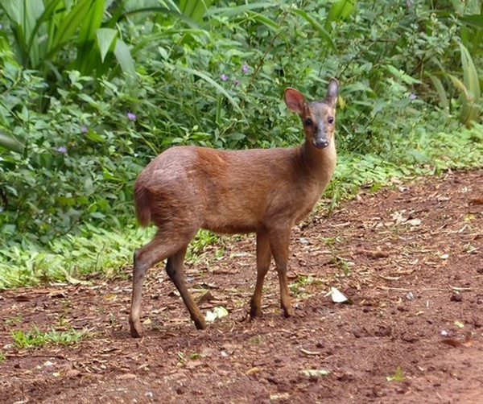
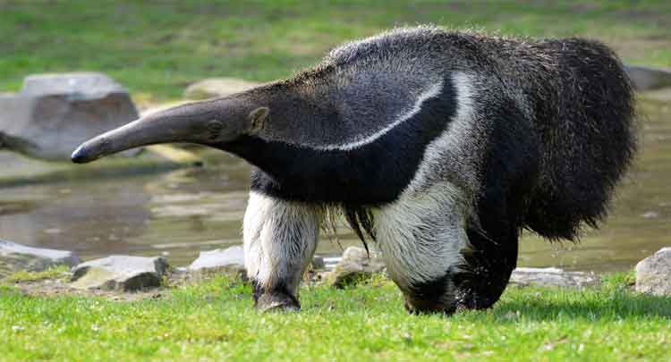
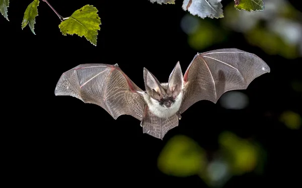
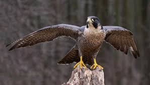

Esse trabalho vai
ser dedicado a apresentar
toda a sua história,
todas as lendas,
todos os pontos turísticos
e as coisas mais importantes da cidade!
Principais Grupos de Animais
Mamíferos:
Veado: Algumas espécies de veados podem ser encontradas na região, adaptadas ao clima semiárido.
Tamanduá: O tamanduá-bandeira é um dos mamíferos emblemáticos, conhecido por sua dieta de formigas e cupins.
Morcegos: Diversas espécies habitam as cavernas e áreas rurais, desempenhando papéis importantes na polinização.
Aves:
Passarinhos: A fauna aviária é rica, com espécies como o galo-da-serra e várias espécies de canários e fringilídeos.

Aves de rapina: Falcões e gaviões podem ser vistos na região, muitas vezes em busca de presas.
Répteis:
Cobra: Espécies como jararacas e cobras-do-milho são comuns, além de lagartos e iguanas.
.jpeg)
Tartarugas: Algumas espécies de tartarugas podem ser encontradas em corpos d'água.
.jpeg)
Anfíbios:
Sapos e rãs: Espécies adaptadas ao ambiente seco e a períodos de chuva.
.jpeg)
Ivertebrados:
Artrópodes: A diversidade de insetos é alta, incluindo borboletas, gafanhotos e formigas, que são essenciais para a polinização e controle de pragas.